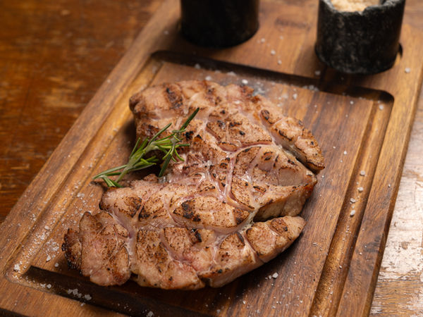
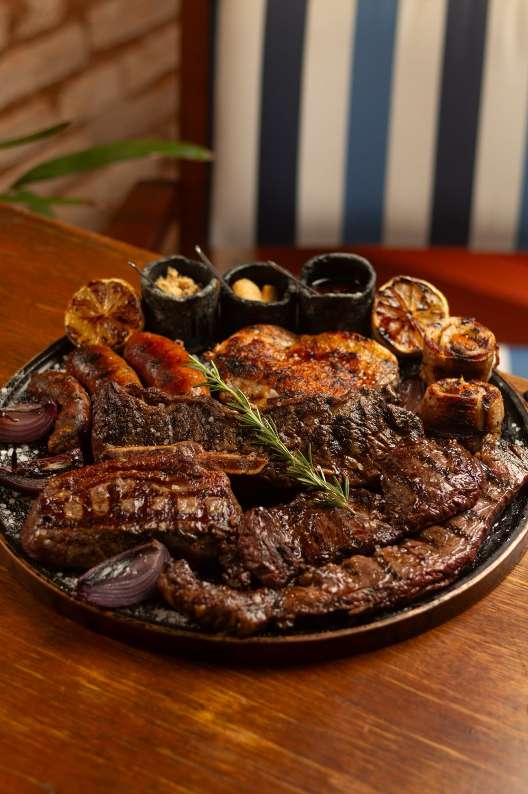
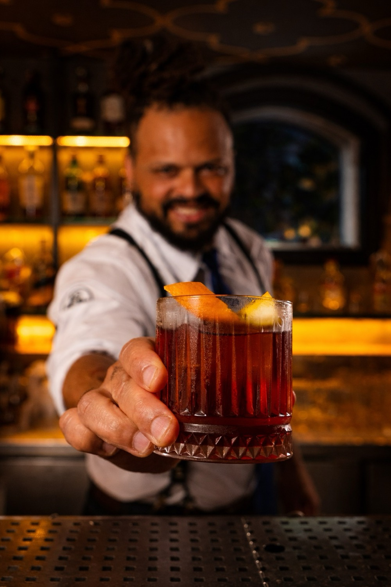
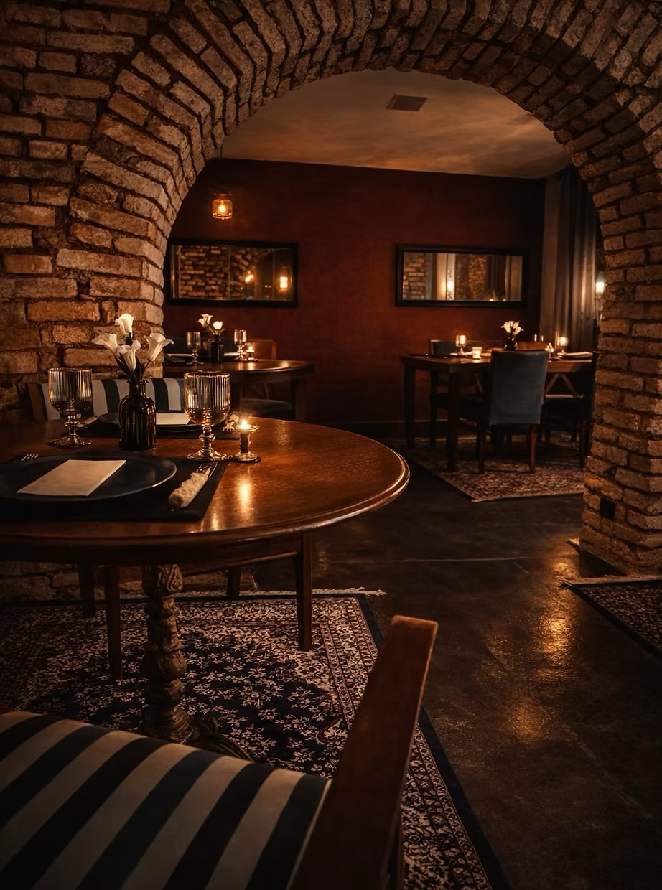
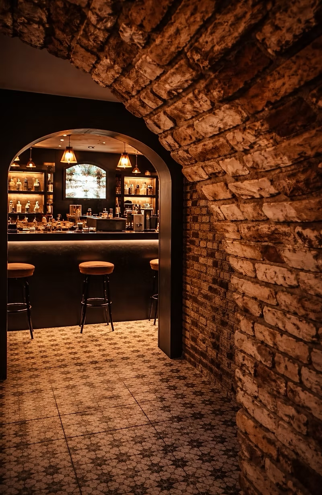
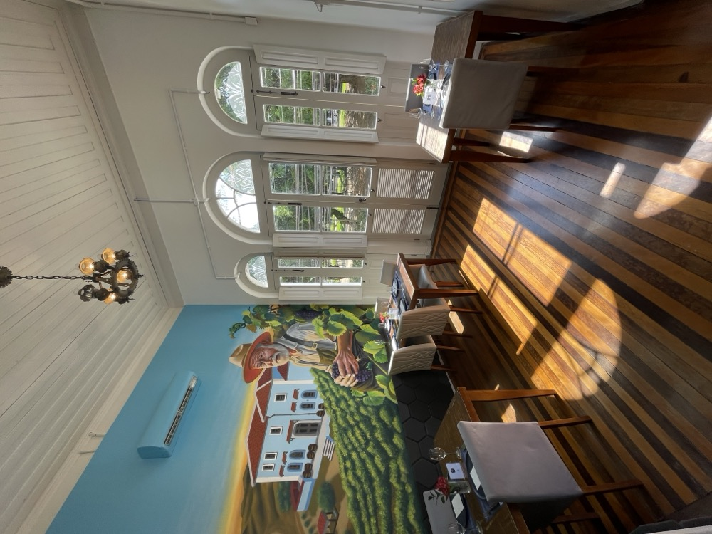
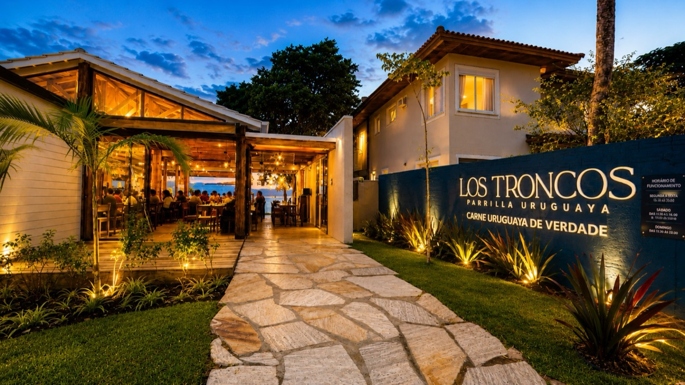
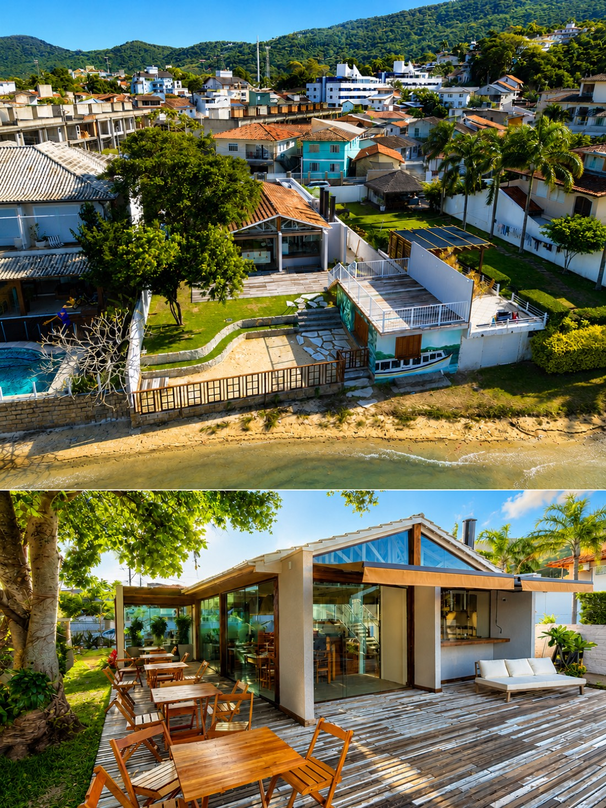
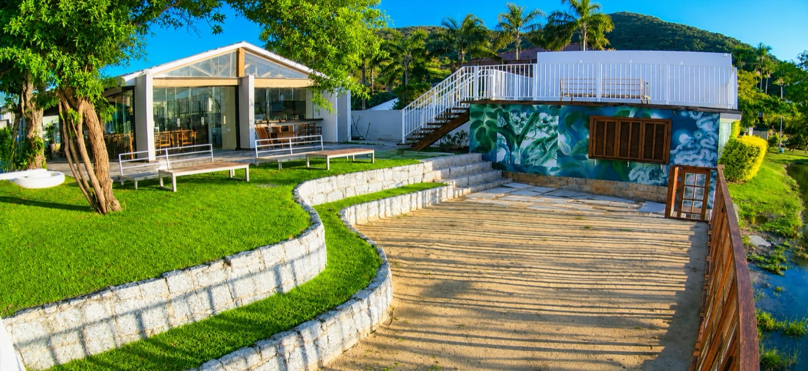

Molleja
Iguaria vinda do Uruguay de sabor marcante
conhecida como “timo bovino” no Brasil –
acompanha limão siciliano caramelizado e
molho chimichurri
Florianópolis · Centro e Lagoa da Conceição
Um novo capítulo da parrilla mais tradicional da cidade
A história da Los Troncos Parrilla Uruguaya começou em 2021, no bairro de Coqueiros, com a proposta de trazer para Florianópolis a autêntica tradição da parrilla uruguaia, valorizando cortes premium, fogo, hospitalidade e uma experiência que vai muito além da gastronomia.
Em janeiro de 2025, essa história ganhou um novo capítulo com a mudança para um dos endereços mais emblemáticos da cidade: um casarão histórico tombado, com mais de 100 anos, localizado no coração de Florianópolis.
Hoje, a tradição da parrilla uruguaia convive em perfeita harmonia com a arquitetura centenária do casarão. Entre ambientes que preservam a história e uma atmosfera elegante e acolhedora, o fogo, os cortes uruguaios cuidadosamente selecionados e o atendimento atencioso continuam sendo a essência da Los Troncos.
Mais do que um restaurante, a Los Troncos é um convite para viver Florianópolis através da gastronomia, da história e dos encontros que acontecem ao redor da parrilla.
"O clássico e o contemporâneo
se encontram de forma única."
O Uruguay possui 3,5 milhões de habitantes e 12 milhões de cabeças de gado, o que dá uma média de 3,5 cabeças por habitante, a maior do mundo. Se há um país que entende de carne bovina, sem dúvidas, é o Uruguay.
A Los Troncos foi além de simplesmente escolher boas carnes: fomos até a origem. Buscamos no Uruguay os cortes de um dos rebanhos mais premiados do mundo: o Angus Uruguayo, reconhecido internacionalmente pela sua qualidade superior, marmoreio e sabor incomparável.
Nossas carnes vêm diretamente do Uruguay, através de parcerias com frigoríficos de excelência como Las Piedras, Nirea, entre outros nomes referência na pecuária do país.


Variedade real de cortes uruguaios premium, com procedência garantida e padrão elevado em cada detalhe. Em Florianópolis, nenhuma outra casa reúne essa seleção com a mesma consistência e autenticidade.
O Angus Uruguayo é reconhecido internacionalmente pela qualidade superior, marmoreio e sabor incomparável. A raça certa, o manejo certo, o resultado certo na sua mesa.
A devoção que temos no preparo do verdadeiro asado uruguayo, que une origem, expertise, excelência, pastagem, manejo e nutrição, garante uma experiência única e marcante.
Aqui, não é apenas sobre carne. É sobre origem, tradição e respeito ao que o Uruguay tem de melhor. As verdadeiras carnes uruguayas estão aqui, na Los Troncos: a melhor carne do mundo comercialmente acessível.







Escondido no porão de um casarão centenário da Los Troncos Centro, o Getúlio é um bar secreto para poucos. Apenas 30 lugares dão vida a uma experiência intimista, onde cada detalhe foi pensado para quem valoriza boa coquetelaria, gastronomia e atmosfera.
Encontrar o Getúlio já faz parte da experiência. Depois de atravessar a parrilla e descer ao subsolo, um ambiente elegante, iluminado à meia-luz e inspirado nos grandes bares clássicos revela um dos endereços mais exclusivos de Florianópolis.
À frente do bar está Xavier, Head Bartender da casa. Com mais de 20 anos de experiência, ele assina uma carta de drinks autorais criada para surpreender, combinando técnicas clássicas, ingredientes selecionados e destilados premium. Cada coquetel é preparado individualmente, transformando o balcão em um verdadeiro espetáculo.
No Getúlio, a experiência vai além dos drinks. O menu exclusivo harmoniza a alta coquetelaria com a autêntica parrilla uruguaia, em um ambiente reservado, onde boa música, atendimento personalizado e poucos lugares tornam cada noite única.
"Alguns lugares são famosos.
Outros, permanecem secretos.
O Getúlio foi feito para quem
aprecia descobrir o extraordinário."
A Los Troncos Parrilla Uruguaya tornou-se referência em carnes no estado de Santa Catarina. A gastronomia uruguaya conquistou o coração de moradores e turistas que se encantam com pratos marcantes, ingredientes de excelência e um ambiente acolhedor.
A equipe dedicada e acolhedora cria um clima familiar, fazendo com que todos se sintam em casa, e um pouquinho no Uruguay. Michelle e João, sócios da casa, têm como principal objetivo oferecer uma experiência diferente de tudo o que Florianópolis conhece quando o assunto é carne uruguaia.
Por isso, zelam pela qualidade de cada detalhe: das carnes às entradas; dos vinhos às guarnições tipicamente uruguayas; das cervejas aos drinks. Na Los Troncos, cada escolha é feita para proporcionar uma verdadeira viagem gastronômica.
Mais do que um restaurante, a Los Troncos é um lugar para reunir pessoas, celebrar momentos especiais e vivenciar a riqueza cultural e gastronômica do Uruguay. Aprecie a experiência Los Troncos e seja muito bem-vindo!

Um novo capítulo
O que nasceu da paixão pela gastronomia uruguaia, da dedicação diária e do prazer de receber bem ganhou um novo cenário. Em junho de 2026, a Los Troncos inaugurou sua segunda unidade em um dos lugares mais encantadores de Florianópolis, sem abrir mão da essência que conquistou tantos clientes ao longo da nossa história.
À beira da Lagoa da Conceição, cada visita tem um momento especial. Durante o dia, a vista se revela em toda a sua beleza, convidando a um almoço tranquilo cercado pela natureza. Ao entardecer, o pôr do sol transforma a paisagem. E, à noite, as luzes do restaurante, o reflexo da água e o céu estrelado criam uma atmosfera única. Nas noites de lua cheia, o espetáculo fica completo: a lua surge imensa sobre a lagoa, tornando a experiência ainda mais inesquecível.
Venha viver esse cenário com a autêntica parrilla uruguaia. Você nos encontra na Rua Rita Lourenço da Silveira, 500, Lagoa da Conceição.
Reservar na Lagoa →


Agora em dois endereços: no Centro e na Lagoa da Conceição. Confira os horários e reserve online na unidade da sua preferência.